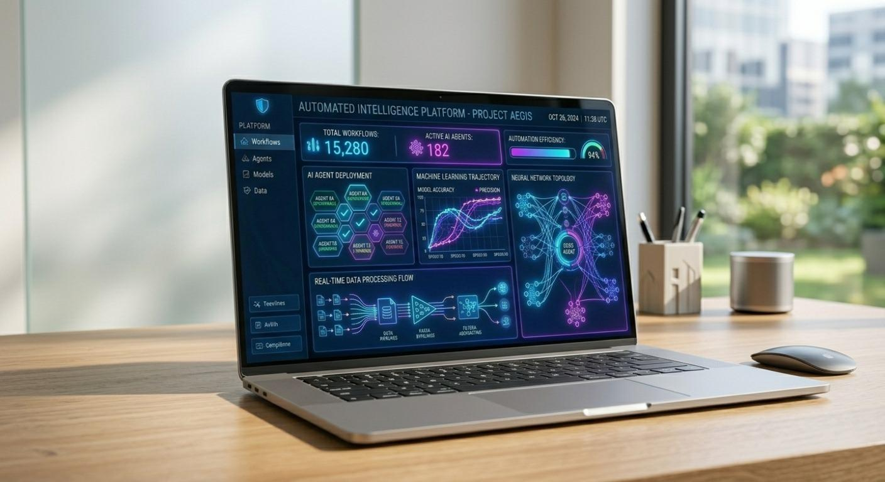

Transform Your Business with Intelligent AI & Automation Solutions
In the era of digital transformation, Artificial Intelligence and Automation have become
essential drivers of efficiency, innovation, and competitive advantage. At MJA
Innovations, we empower organizations with cutting-edge AI and Automation
technologies that streamline operations, unlock valuable insights, reduce costs, and accelerate
sustainable growth.
Our expert team designs and implements intelligent systems that not only automate repetitive
tasks but also enable smarter decision-making, enhance customer experiences, and create new
opportunities for business excellence.

What is AI & Automation?
Artificial Intelligence (AI) is the simulation of human intelligence processes
by machines, enabling them to learn from data, recognize patterns, make predictions, and perform
complex tasks. Automation refers to the use of technology to execute repetitive
or rule-based processes with minimal human intervention.
When combined, AI and Automation create powerful synergies that allow businesses to:
- • Process and analyze vast amounts of structured and unstructured data in real time.
- • Predict future trends, customer behaviors, and operational risks.
- • Automate complex workflows and decision-making processes.
- • Deliver personalized experiences at scale.
- • Significantly improve operational efficiency and accuracy.
- • Reduce manual errors and operational costs.
We leverage advanced technologies including Machine Learning (ML), Deep Learning, Natural Language Processing (NLP), Computer Vision, Robotic Process Automation (RPA), Generative AI, Predictive Analytics, Intelligent APIs, and Cloud-based AI services.
Our AI & Automation Solutions
• AI Chatbot & Virtual Assistant Development: Intelligent, conversational AI agents for websites, mobile apps, WhatsApp, Facebook, and other platforms that provide 24/7 customer support.
• Business Process Automation (BPA): End-to-end automation of repetitive and rule-based business processes to improve speed and accuracy.
• Intelligent Workflow Automation: Advanced systems that orchestrate complex multi-step workflows across departments and tools.
• CRM & ERP Automation: Seamless integration and automation of Customer Relationship Management and Enterprise Resource Planning systems.
• AI-Powered Data Analytics: Advanced platforms that transform raw data into actionable insights using predictive modeling and real-time dashboards.
• Predictive Analytics & Forecasting Systems: AI models that forecast demand, sales, inventory needs, maintenance requirements, and risk factors.
• AI Recommendation Engines: Personalized product, content, or service recommendations that boost conversion rates.
• Automated Customer Support Systems: Smart ticketing, issue resolution, and self-service portals powered by AI.
• Document Processing & Intelligent Extraction: AI-driven automation for invoice processing, form recognition, OCR, and data entry using Computer Vision and NLP.
• Custom AI Software Development: Bespoke AI solutions built specifically for your unique business challenges and objectives.
• Generative AI Solutions: Implementation of tools like ChatGPT-style assistants, content generation, code generation, and creative automation.
Our Proven Implementation Process
1. Discovery & Requirement Analysis: Understanding your business goals, challenges, and existing systems.
2. Process Assessment & Opportunity Identification: Mapping current workflows and identifying high-impact automation areas.
3. AI Model Design & Architecture: Designing scalable AI models and secure system architecture.
4. Development & Integration: Building and integrating AI components with your existing tools and platforms.
5. Rigorous Testing & Optimization: Ensuring accuracy, performance, security, and compliance.
6. Deployment & Training: Smooth rollout with user training and change management support.
7. Continuous Monitoring & Improvement: Ongoing performance tracking, model retraining, and iterative enhancements.
Key Benefits of Our AI & Automation Solutions
• Significant Cost Reduction: Automate manual tasks and optimize resource utilization.
• Increased Productivity: Free up employees to focus on strategic and creative work.
• Enhanced Decision Making: Data-driven insights and predictive capabilities for better outcomes.
• Improved Accuracy: Minimize human errors through intelligent automation.
• Superior Customer Experience: Deliver faster, personalized, and consistent service.
• Competitive Advantage: Stay ahead by adopting intelligent technologies early.
Industries We Serve
Healthcare & Telemedicine | E-commerce & Retail | Banking, Finance & Fintech | Education & EdTech | Manufacturing & Industry 4.0 | Logistics & Supply Chain | Real Estate | Corporate Enterprises | Startups & SMEs | Public Sector
Why Choose MJA Innovations?
- ✓ Expert AI Team: Seasoned AI engineers, data scientists, and automation specialists.
- ✓ Security-First Architecture: Robust data protection, encryption, and compliance with GDPR/CCPA.
- ✓ Scalable Solutions: Systems designed to evolve with emerging technologies and business growth.
- ✓ Dedicated Support: Ongoing maintenance, model monitoring, and continuous optimization.
Frequently Asked Questions (FAQs)
Q: How much do AI & Automation services cost?
A: Pricing depends on project scope, complexity, data requirements, and integration needs.
We provide transparent, customized quotes after understanding your specific requirements.
Q: Can AI solutions be integrated with our existing systems?
A: Yes. We specialize in seamless integration with your current CRM, ERP, websites,
databases, and third-party tools.
Q: Is AI secure for sensitive business data?
A: Absolutely. We follow industry-leading security practices, data encryption, and access
controls to ensure maximum protection.
Q: Do you develop fully custom AI solutions?
A: Yes. We build tailored AI systems designed specifically around your business objectives.
"Ready to Unlock the Power of AI & Automation? Take your business to the next level with intelligent automation that delivers real results."